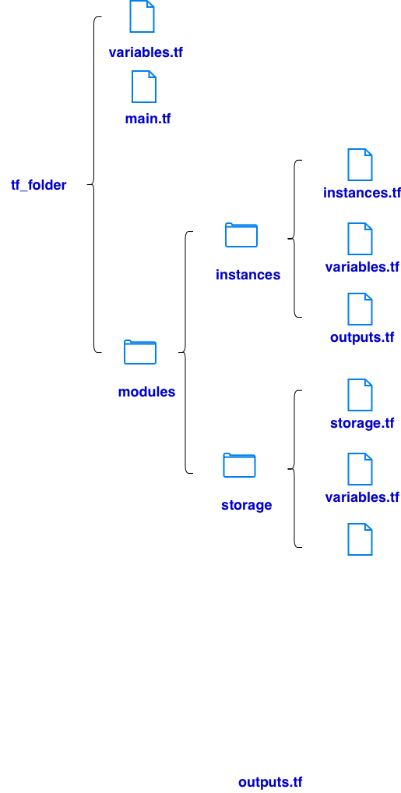

# variables.tf
variable "project_id" {
description = "Google Cloud Project ID"
type = string
default = "qwiklabs-gcp-01-04c0ad614214"
}
variable "region" {
description = "Default GCP region"
type = string
default = "us-west4"
}
variable "zone" {
description = "Default GCP zone"
type = string
default = "us-west4-b"
}
# main.tf
terraform {
required_version = ">= 1.5.0"
required_providers {
google = {
source = "hashicorp/google"
version = "~> 5.0"
}
}
backend "gcs" {
bucket = "tf-bucket-768227"
prefix = "terraform/state"
}
}
provider "google" {
project = var.project_id
region = var.region
zone = var.zone
}
module "instances" {
source = "./modules/instances"
project_id = var.project_id
region = var.region
zone = var.zone
}
module "storage" {
source = "./modules/storage"
project_id = var.project_id
region = var.region
zone = var.zone
}
module "network" {
source = "terraform-google-modules/network/google"
version = "10.0.0"
project_id = var.project_id
network_name = "tf-vpc-832951"
routing_mode = "GLOBAL"
subnets = [
{
subnet_name = "subnet-01"
subnet_ip = "10.10.10.0/24"
subnet_region = "us-west4"
},
{
subnet_name = "subnet-02"
subnet_ip = "10.10.20.0/24"
subnet_region = "us-west4"
}
]
}
resource "google_compute_firewall" "tf_firewall" {
name = "tf-firewall"
network = "tf-vpc-832951"
direction = "INGRESS"
allow {
protocol = "tcp"
ports = ["80"]
}
source_ranges = ["0.0.0.0/0"]
}
# modules/instances/variables.tf
variable "project_id" {
description = "Google Cloud Project ID"
type = string
default = "qwiklabs-gcp-01-04c0ad614214"
}
variable "region" {
description = "Default GCP region"
type = string
default = "us-west4"
}
variable "zone" {
description = "Default GCP zone"
type = string
default = "us-west4-b"
}
# modules/instances/instance.tf
###################################
# tf-instance-1 (UPDATED)
###################################
resource "google_compute_instance" "tf_instance_1" {
name = "tf-instance-1"
zone = var.zone
machine_type = "e2-standard-2"
boot_disk {
initialize_params {
image = "debian-11-bullseye-v20260114"
}
}
network_interface {
network = "tf-vpc-832951"
subnetwork = "subnet-01"
}
metadata_startup_script = <<-EOT
#!/bin/bash
EOT
allow_stopping_for_update = true
}
###################################
# tf-instance-2 (UPDATED)
###################################
resource "google_compute_instance" "tf_instance_2" {
name = "tf-instance-2"
zone = var.zone
machine_type = "e2-standard-2"
boot_disk {
initialize_params {
image = "debian-11-bullseye-v20260114"
}
}
network_interface {
network = "tf-vpc-832951"
subnetwork = "subnet-02"
}
metadata_startup_script = <<-EOT
#!/bin/bash
EOT
allow_stopping_for_update = true
}
# modules/instances/outputs.tf
output "instance_1_name" {
value = google_compute_instance.tf_instance_1.name
}
output "instance_2_name" {
value = google_compute_instance.tf_instance_2.name
}
# modules/storage/variables.tf
variable "project_id" {
description = "Google Cloud Project ID"
type = string
default = "qwiklabs-gcp-01-04c0ad614214"
}
variable "region" {
description = "Default GCP region"
type = string
default = "us-west4"
}
variable "zone" {
description = "Default GCP zone"
type = string
default = "us-west4-b"
}
# modules/storage/storage.tf
resource "google_storage_bucket" "tf_state_bucket" {
name = "tf-bucket-768227"
location = "US"
force_destroy = true
uniform_bucket_level_access = true
}
# modules/storage/outputs.tf
output "bucket_name" {
value = google_storage_bucket.tf_state_bucket.name
}
# initialize project
terraform init
# create plan
terraform plan
# execute plan
terraform apply
# inspect infrastructure
terraform show
# display selected values
terraform output
# change tf files
# change changes
terraform plan
# make changes
terraform apply
terraform detroy